%matplotlib inline
# 此命令告诉Jupyter直接在notebook输出中显示matplotlib图表。
# 没有它，您可能看不到您的图表！Python 数据分析
第 9 章：绘图与可视化
引言 📊
生成信息丰富的可视化图形（有时称为图表）是数据分析中最重要的任务之一。
- 探索性过程：有助于识别异常值或需要的数据转换。
- 模型生成：有助于产生模型想法。
- Web 可视化：构建交互式可视化可能是最终目标。
Note
Python 有许多用于可视化的附加库，但我们将重点关注 matplotlib 以及构建在其之上的库，例如 seaborn。
什么是 matplotlib？ 🖼️
- 一个桌面绘图包，用于创建出版质量的图表。
- 由 John Hunter 于 2002 年发起，旨在 Python 中提供类似 MATLAB 的绘图界面。
- 为什么？ 🤔 为了让科学家和工程师更容易在 Python 中创建图表，就像他们在 MATLAB 中所做的那样！
- 与 IPython 合作简化交互式绘图。
- 支持各种 GUI 后端和导出格式（PDF、SVG、JPG、PNG、BMP、GIF 等）。
- 许多书籍和出版物中的大多数图形都是使用 matplotlib 生成的。
Tip
Matplotlib 催生了像 seaborn 这样的附加工具包，增强了其功能。
在 Jupyter 中设置 matplotlib ⚙️
要在 Jupyter Notebook 中以内联方式显示图表，请使用魔术命令：
Note
此命令告诉 Jupyter 直接在笔记本输出中显示 matplotlib 图表。没有它，您可能看不到您的图表！
数据可视化库的演变
- 自 2012 年以来，出现了许多新的可视化库。
- Bokeh 和 Altair：利用现代 Web 技术进行交互式可视化。
- 本课程重点介绍 matplotlib，因为它具有基础性和与 pandas 的集成性。
- 为什么选择 matplotlib？ 🤔 这就像在跑步之前学会走路！理解 matplotlib 可以帮助您掌握基础知识，从而更容易学习其他库。
Tip
这里学到的原则可以适用于其他可视化库。
matplotlib API 简明入门
matplotlib 的导入惯例：
import matplotlib.pyplot as plt
# 这行代码从matplotlib导入pyplot模块，并给它一个更短的名称plt。
# 这是一种常见的做法，可以使您的代码更简洁易读。
Note
这行代码从 matplotlib 导入 pyplot 模块，并给它一个更短的名称 plt。这是一种常见的做法，可以使您的代码更简洁易读。
创建一个简单的图表
import numpy as np # 导入numpy库，并将其重命名为np
data = np.arange(10) # 创建一个包含0到9的整数的数组
plt.plot(data) # 使用plt.plot()函数绘制data数组中的数据np.arange(10)：创建一个从 0 到 9 的数字数组。plt.plot(data)：将数据绘制为折线图。
简单折线图结果

图形和子图 📐
matplotlib 中的图表位于 Figure 对象中。
- 什么是 Figure？ 🤔 可以把它想象成一个空白画布，您可以在上面绘制图表。
使用
plt.figure()创建一个新图形：
fig = plt.figure() # 创建一个空白的matplotlib图形对象<Figure size 672x480 with 0 Axes>plt.figure选项：figsize：保证图形大小和纵横比。
添加子图 ➕
- 您不能在空白图形上绘图；使用
add_subplot创建子图：
ax1 = fig.add_subplot(2, 2, 1)
# 这行代码在前面创建的figure对象上添加一个子图。
# 参数(2, 2, 1)表示：
# 创建一个2x2的子图网格（总共4个子图）。
# 选择第一个子图（编号从1开始）。
# 类比：就像在Excel表格中选择一个单元格区域。add_subplot(2, 2, 1)表示：- 一个 2x2 的子图网格（总共 4 个图表）。
- 选择第 1 个子图（从 1 开始编号）。
- 类比：就像在 Excel 中选择单元格区域一样。
创建其他子图
- 创建其他子图：
ax2 = fig.add_subplot(2, 2, 2) # 在2x2网格中选择第2个子图
ax3 = fig.add_subplot(2, 2, 3) # 在2x2网格中选择第3个子图一个包含三个子图的空图形

Jupyter 中的绘图命令 📝
Note
在 Jupyter Notebook 中，图表在每个单元格后重置。将所有绘图命令放在一个单元格中。
- 为什么？ 🤔 Jupyter 独立运行每个单元格。如果您拆分绘图命令，您可能只会看到最后一个图表！
fig = plt.figure() # 创建一个图形对象
ax1 = fig.add_subplot(2, 2, 1) # 在图形中添加第一个子图
ax2 = fig.add_subplot(2, 2, 2) # 在图形中添加第二个子图
ax3 = fig.add_subplot(2, 2, 3) # 在图形中添加第三个子图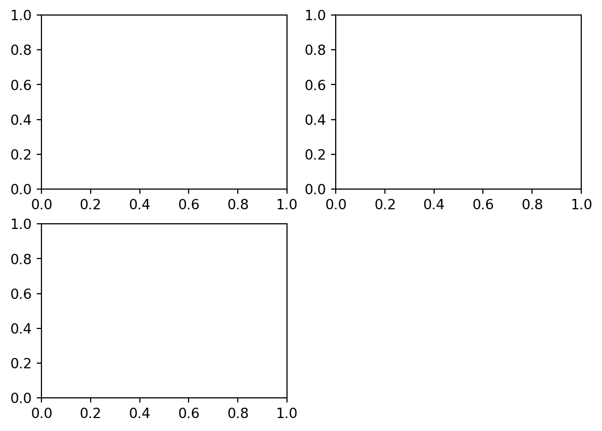
使用 Axes 方法 🎯
- AxesSubplot 对象具有创建不同图表类型的方法。
- 优先于
plt.plot等顶级函数。 - 示例：
ax3.plot(np.random.standard_normal(50).cumsum(), color="black", linestyle="dashed")
# 在第三个子图(ax3)上绘制一条线。
# np.random.standard_normal(50)生成50个服从标准正态分布的随机数。
# .cumsum()计算累积和。
# color="black"设置线条颜色为黑色。
# linestyle="dashed"设置线条样式为虚线。单个图表后的数据可视化

理解 matplotlib 输出 💬
- 您可能会看到类似
<matplotlib.lines.Line2D at ...>的输出。- 这是什么意思？ 🤔 它是对您刚刚添加的图表元素的引用。您通常可以忽略它。
- 要抑制输出，请在行尾添加分号 (
;)。- 为什么要抑制？ 🧹 保持笔记本输出干净，专注于图表。
ax3.plot(np.random.standard_normal(50).cumsum(), color="black", linestyle="dashed"); # 注意分号，用于抑制输出向子图添加更多图表 ➕
ax1.hist(np.random.standard_normal(100), bins=20, color="black", alpha=0.3)
# 在第一个子图(ax1)上创建一个直方图。
# np.random.standard_normal(100)生成100个标准正态分布的随机数。
# bins=20将数据分成20个柱子。
# color="black"设置柱子颜色为黑色。
# alpha=0.3设置透明度为0.3。
ax2.scatter(np.arange(30), np.arange(30) + 3 * np.random.standard_normal(30))
# 在第二个子图(ax2)上创建一个散点图。
# np.arange(30)创建从0到29的整数数组作为x坐标。
# np.arange(30) + 3 * np.random.standard_normal(30)创建y坐标，其中加入了一些随机噪声。ax1.hist(...)：创建直方图。ax2.scatter(...)：创建散点图。alpha=0.3：设置图表的透明度。
其他图表后的数据可视化

使用 plt.subplots 方便地创建子图
plt.subplots创建一个图形和一个包含子图对象的 NumPy 数组：
fig, axes = plt.subplots(2, 3) # 创建一个包含2行3列子图的图形，并返回图形对象(fig)和子图对象数组(axes)
axes # 显示子图对象数组array([[<Axes: >, <Axes: >, <Axes: >],
[<Axes: >, <Axes: >, <Axes: >]], dtype=object)- 像访问 2D 数组一样访问子图：
axes[0, 1]。 sharex和sharey：共享相同的 x 轴或 y 轴以比较数据。
plt.subplots 选项 ⚙️
| 参数 | 描述 |
|---|---|
nrows |
子图的行数 |
ncols |
子图的列数 |
sharex |
所有子图使用相同的 x 轴刻度 |
sharey |
所有子图使用相同的 y 轴刻度 |
subplot_kw |
传递给 add_subplot 的关键字字典 |
**fig_kw |
传递给 subplots 的其他关键字（例如，figsize=(8, 6)） |
表 9-1. matplotlib.pyplot.subplots 选项
调整子图周围的间距 📏
- 子图之间有默认的填充和间距。
- 使用
subplots_adjust方法更改间距：
fig.subplots_adjust(left=None, bottom=None, right=None, top=None,
wspace=None, hspace=None)
# 调整子图之间的间距。
# left, bottom, right, top: 控制图形边缘与子图之间的距离。
# wspace: 控制子图之间的水平间距。
# hspace: 控制子图之间的垂直间距。wspace和hspace：控制用于间距的图形宽度/高度的百分比。
示例：将间距缩小到零 🚫
fig, axes = plt.subplots(2, 2, sharex=True, sharey=True) # 创建一个2x2的子图网格，共享x轴和y轴
for i in range(2): # 遍历行
for j in range(2): # 遍历列
axes[i, j].hist(np.random.standard_normal(500), bins=50,
color="black", alpha=0.5) # 在每个子图上绘制直方图
fig.subplots_adjust(wspace=0, hspace=0) # 将子图之间的水平和垂直间距设置为0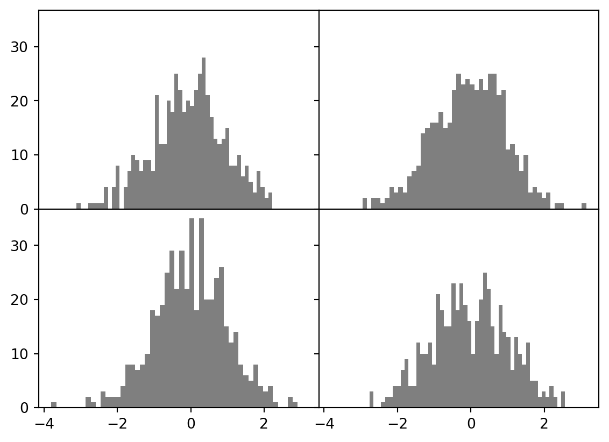
无子图间距的数据可视化

重叠的轴标签
- matplotlib 不检查重叠的标签。
- 通过指定刻度位置和标签来修复标签。
- 在“刻度、标签和图例”部分中介绍。
颜色、标记和线型 🎨
- 使用颜色、标记和线型自定义折线图。
- 示例：
axes.plot(x, y, linestyle="--", color="green") # 使用绿色虚线绘制(x, y)数据- 使用颜色名称或十六进制代码（例如，
"#CECECE"）。 - 线型：检查
plt.plot文档字符串（使用plt.plot?）。
用于突出显示数据点的标记 📍
- 折线图可以有标记来显示实际数据点。
- 当插值可能会掩盖点的位置时很有用。
- 示例：
axes.plot(np.random.standard_normal(30).cumsum(), color="black",
linestyle="dashed", marker="o")
# 绘制一条带有圆圈标记的黑色虚线。
# np.random.standard_normal(30).cumsum()生成30个标准正态分布随机数的累积和。
# marker="o"设置标记为圆圈。带标记的折线图

drawstyle 选项 🎨
- 线性插值是默认值。
- 使用
drawstyle选项更改：
ax.plot(data, color="black", linestyle="dashed", label="Default")
# 绘制一条黑色虚线，标签为"Default"（默认插值方式）。
ax.plot(data, color="black", linestyle="dashed",
drawstyle="steps-post", label="steps-post")
# 绘制一条黑色虚线，标签为"steps-post"，使用阶梯图的后阶跃方式。
ax.legend() # 显示图例具有不同 drawstyle 选项的折线图

刻度、标签和图例 🏷️
- 图表装饰通过 matplotlib 坐标轴对象方法访问。
xlim、xticks、xticklabels：控制图表范围、刻度位置和标签。- 两种使用方式：
- 无参数：返回当前值（例如，
ax.xlim()）。 - 带参数：设置值（例如，
ax.xlim([0, 10])）。
- 无参数：返回当前值（例如，
自定义坐标轴 🛠️
- 示例：随机游走图。
fig, ax = plt.subplots() # 创建一个包含一个子图的图形
ax.plot(np.random.standard_normal(1000).cumsum()) # 绘制1000个标准正态分布随机数的累积和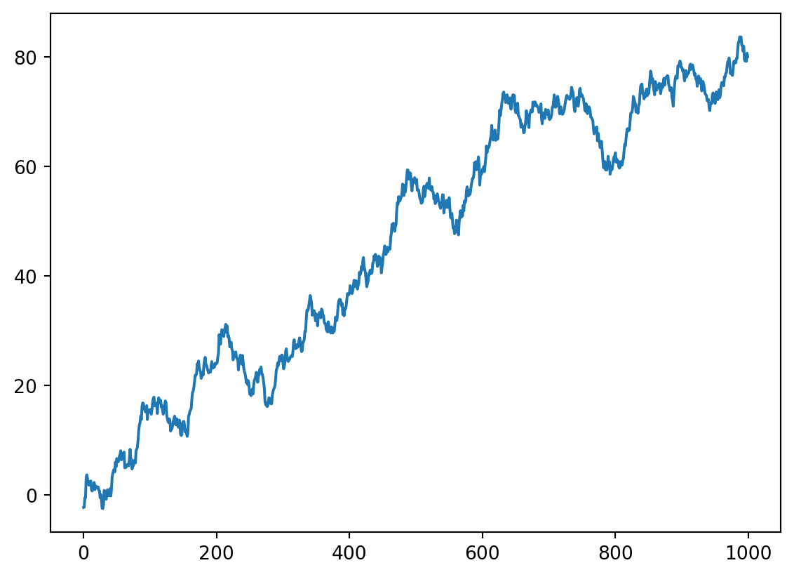
用于说明 xticks 的简单图表

设置刻度和刻度标签
ticks = ax.set_xticks([0, 250, 500, 750, 1000]) # 设置x轴刻度位置
labels = ax.set_xticklabels(["one", "two", "three", "four", "five"],
rotation=30, fontsize=8)
# 设置x轴刻度标签。
# rotation=30将标签旋转30度。
# fontsize=8设置标签字体大小为8。设置标题和轴标签 📝
ax.set_xlabel("Stages") # 设置x轴标签为"Stages"
ax.set_title("My first matplotlib plot") # 设置子图标题为"My first matplotlib plot"Text(0.5, 1.0, 'My first matplotlib plot')用于说明自定义 xticks 的简单图表

rotation：设置刻度标签旋转（例如，30 度）。set_xlabel：命名 x 轴。set_title：设置子图标题。
批量设置图表属性 ⚙️
- Axes 类有一个
set方法：
ax.set(title="My first matplotlib plot", xlabel="Stages")
# 使用set方法一次性设置多个属性。
# 等同于分别调用ax.set_title()和ax.set_xlabel()。[Text(0.5, 1.0, 'My first matplotlib plot'),
Text(0.5, 8.533333333333337, 'Stages')]添加图例 ➕
- 图例标识图表元素。
- 添加图表元素时传递
label参数：
fig, ax = plt.subplots() # 创建一个包含一个子图的图形
ax.plot(np.random.randn(1000).cumsum(), color="black", label="one")
# 绘制第一条线，标签为"one"。
ax.plot(np.random.randn(1000).cumsum(), color="black", linestyle="dashed", label="two")
# 绘制第二条线，标签为"two"，线型为虚线。
ax.plot(np.random.randn(1000).cumsum(), color="black", linestyle="dotted", label="three")
# 绘制第三条线，标签为"three"，线型为点线。
ax.legend() # 显示图例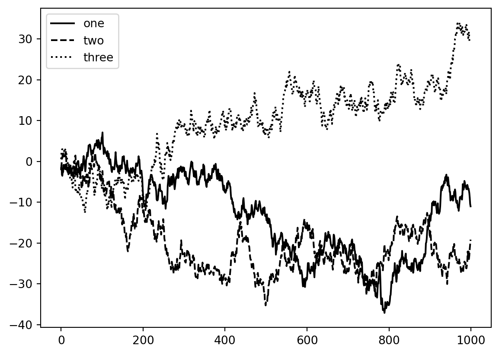
带有三条线和图例的简单图表

ax.legend() 选项 ⚙️
ax.legend()：自动创建图例。loc：指定图例位置（默认为"best"）。- 排除元素：不传递标签或传递
label="_nolegend_"。
注释和在子图上绘图 ✍️
- 添加自定义注释：文本、箭头、形状。
text、arrow、annotate函数。ax.text(x, y, "Hello world!", family="monospace", fontsize=10)：在 (x, y) 处绘制文本。
注释标准普尔 500 指数 📈
- 示例：绘制 2007 年以来的标准普尔 500 指数收盘价并添加注释。
import pandas as pd # 导入pandas库
from datetime import datetime # 导入datetime模块
fig, ax = plt.subplots() # 创建一个图形和一个子图
data = pd.read_csv("examples/spx.csv", index_col=0, parse_dates=True)
# 从CSV文件读取数据。
# index_col=0将第一列设置为索引。
# parse_dates=True尝试将索引解析为日期。
spx = data["SPX"] # 获取"SPX"列（标准普尔500指数）
spx.plot(ax=ax, color="black") # 绘制标准普尔500指数，颜色为黑色注释标准普尔 500 指数（续）
crisis_data = [
(datetime(2007, 10, 11), "Peak of bull market"), # 牛市高峰
(datetime(2008, 3, 12), "Bear Stearns Fails"), # 贝尔斯登倒闭
(datetime(2008, 9, 15), "Lehman Bankruptcy") # 雷曼兄弟破产
]
for date, label in crisis_data: # 遍历危机数据
ax.annotate(label, xy=(date, spx.asof(date) + 75),
xytext=(date, spx.asof(date) + 225),
arrowprops=dict(facecolor="black", headwidth=4, width=2,
headlength=4),
horizontalalignment="left", verticalalignment="top")
# 使用ax.annotate()添加注释。
# label: 注释文本。
# xy: 箭头指向的坐标(x, y)。
# xytext: 文本的起始坐标。
# arrowprops: 箭头属性（颜色、头部宽度、箭头宽度、头部长度）。
# horizontalalignment, verticalalignment: 文本对齐方式。注释标准普尔 500 指数（续）
# 放大2007-2010年
ax.set_xlim(["1/1/2007", "1/1/2011"]) # 设置x轴范围
ax.set_ylim([600, 1800]) # 设置y轴范围
ax.set_title("Important dates in the 2008-2009 financial crisis") # 设置图形标题Text(0.5, 1.0, 'Important dates in the 2008-2009 financial crisis')2008-2009 年金融危机中的重要日期

标准普尔 500 指数图表上的重要点
ax.annotate：在指定的 (x, y) 坐标处绘制标签。set_xlim、set_ylim：手动设置图表边界。ax.set_title：添加主标题。
绘制形状（补丁） 🔵🔺🟥
- matplotlib 有称为 patches 的对象，表示形状。
Rectangle、Circle：在matplotlib.pyplot中找到。- 完整集合：
matplotlib.patches。 - 使用
ax.add_patch添加到图表。
fig, ax = plt.subplots() # 创建一个图形和一个子图
rect = plt.Rectangle((0.2, 0.75), 0.4, 0.15, color="black", alpha=0.3)
# 创建一个矩形对象。
# (0.2, 0.75): 左下角坐标。
# 0.4: 宽度。
# 0.15: 高度。
# color="black": 颜色为黑色。
# alpha=0.3: 透明度为0.3。
circ = plt.Circle((0.7, 0.2), 0.15, color="blue", alpha=0.3)
# 创建一个圆形对象。
# (0.7, 0.2): 圆心坐标。
# 0.15: 半径。
# color="blue": 颜色为蓝色。
# alpha=0.3: 透明度为0.3。
pgon = plt.Polygon([[0.15, 0.15], [0.35, 0.4], [0.2, 0.6]],
color="green", alpha=0.5)
# 创建一个多边形对象。
# [[0.15, 0.15], [0.35, 0.4], [0.2, 0.6]]: 多边形顶点坐标。
# color="green": 颜色为绿色。
# alpha=0.5: 透明度为0.5。
ax.add_patch(rect) # 将矩形添加到子图
ax.add_patch(circ) # 将圆形添加到子图
ax.add_patch(pgon) # 将多边形添加到子图由三个不同补丁组成的数据可视化

将图表保存到文件 💾
savefig实例方法：保存活动图形。- 示例：
fig.savefig("figpath.svg") # 将图形保存为SVG文件- 文件类型从扩展名推断（例如，
.pdf、.png）。 dpi：控制每英寸点数分辨率。
fig.savefig("figpath.png", dpi=400) # 将图形保存为PNG文件，分辨率为400 dpisavefig 选项 ⚙️
| 参数 | 描述 |
|---|---|
fname |
文件路径或 Python 类文件对象；格式从扩展名推断 |
dpi |
每英寸点数分辨率 |
facecolor |
子图外部的图形背景颜色（默认值："w" - 白色） |
edgecolor |
图形边缘的颜色 |
format |
显式文件格式（例如，"png"、"pdf"、"svg"） |
表 9-2. 部分 fig.savefig 选项
matplotlib 配置 ⚙️
- matplotlib 具有颜色方案和默认值的配置。
- 通过全局参数自定义：图形大小、子图间距、颜色、字体等。
rc方法：以编程方式修改配置。- 示例：将默认图形大小设置为 10x10。
plt.rc("figure", figsize=(10, 10)) # 设置默认图形大小为10x10英寸恢复默认配置值 🔄
- 当前设置：
plt.rcParams字典。 - 恢复默认值：
plt.rcdefaults()。
自定义特定组件 🧩
- 第一个
rc参数：要自定义的组件（例如，"figure"、"axes"、"xtick"）。 - 后跟新参数的关键字参数。
- 示例：
plt.rc("font", family="monospace", weight="bold", size=8)
# 设置默认字体。
# family="monospace": 使用等宽字体。
# weight="bold": 使用粗体。
# size=8: 字体大小为8。matplotlibrc 配置文件 📝
- 广泛自定义：
matplotlib/mpl-data中的matplotlibrc文件。 - 将自定义的
matplotlibrc放在您的主目录中，命名为.matplotlibrc。 - 每次使用 matplotlib 时加载。
seaborn 和 matplotlib 配置 🎨
- seaborn 在内部使用 matplotlib 的配置系统。
- seaborn 具有内置的图表主题和样式。
使用 pandas 和 seaborn 绘图
- Matplotlib 可能是低级的。
- pandas：用于可视化
DataFrame和Series对象的内置方法。 - seaborn：基于 matplotlib 构建的高级统计图形库。
- seaborn 简化了创建常见可视化类型的过程。
使用 pandas 的折线图 📈
Series和DataFrame有一个plot属性。plot()默认创建折线图：
s = pd.Series(np.random.standard_normal(10).cumsum(), index=np.arange(0, 100, 10))
# 创建一个Series对象。
# np.random.standard_normal(10).cumsum(): 生成10个标准正态分布随机数的累积和。
# index=np.arange(0, 100, 10): 设置索引为0, 10, 20, ..., 90。
s.plot() # 绘制Series的折线图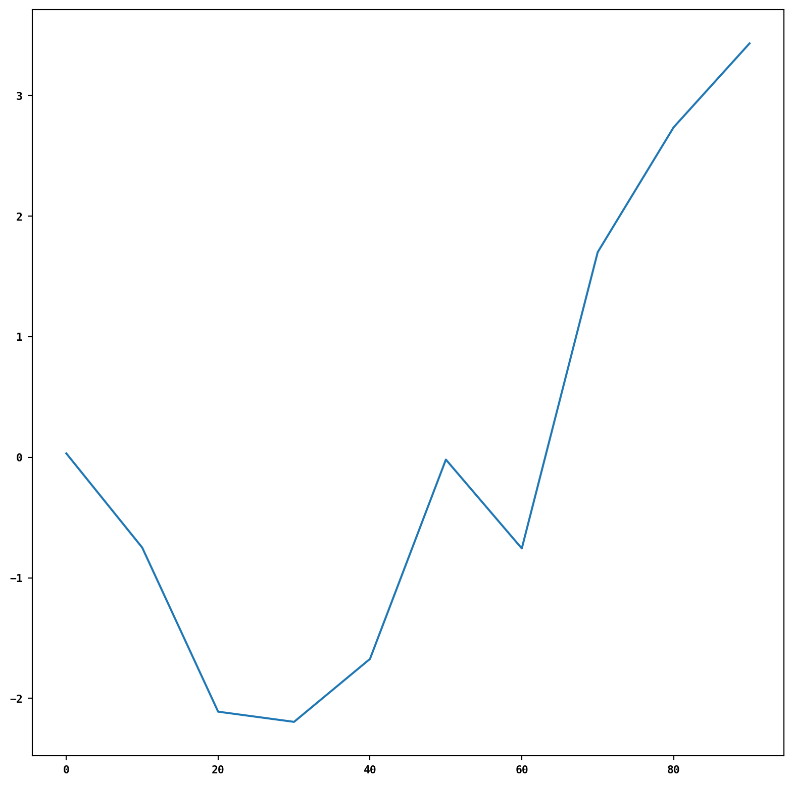
简单 Series 图表

- Series 索引：用于 x 轴（使用
use_index=False禁用）。 xticks、xlim、yticks、ylim：调整轴刻度和限制。
Series.plot 方法参数 ⚙️
| 参数 | 描述 |
|---|---|
label |
图例标签 |
ax |
要绘制的 matplotlib 子图对象 |
style |
样式字符串（例如，"ko--"） |
alpha |
图表填充不透明度（0 到 1） |
kind |
图表类型："area"、"bar"、"barh"、"density"、"hist"、"kde"、"line"、"pie" |
figsize |
图形对象的大小 |
logx |
x 轴上的对数缩放 |
logy |
y 轴上的对数缩放 |
title |
图表标题 |
use_index |
使用对象索引作为刻度标签 |
rot |
刻度标签旋转（0-360） |
xticks |
x 轴刻度值 |
yticks |
y 轴刻度值 |
xlim |
x 轴限制（例如，[0, 10]) |
ylim |
y 轴限制 |
grid |
显示轴网格（默认关闭） |
表 9-3. Series.plot 方法参数
- pandas 绘图方法接受可选的
ax参数，用于指定 matplotlib 子图对象。
DataFrame 折线图 📊
df = pd.DataFrame(np.random.standard_normal((10, 4)).cumsum(0),
columns=["A", "B", "C", "D"],
index=np.arange(0, 100, 10))
# 创建一个DataFrame对象。
# np.random.standard_normal((10, 4)).cumsum(0): 生成10x4的标准正态分布随机数，并沿列(axis=0)计算累积和。
# columns=["A", "B", "C", "D"]: 设置列名为A, B, C, D。
# index=np.arange(0, 100, 10): 设置索引为0, 10, 20, ..., 90。
plt.style.use('grayscale') # 使用灰度样式，以适应黑白出版物
df.plot() # 绘制DataFrame的折线图，每列一条线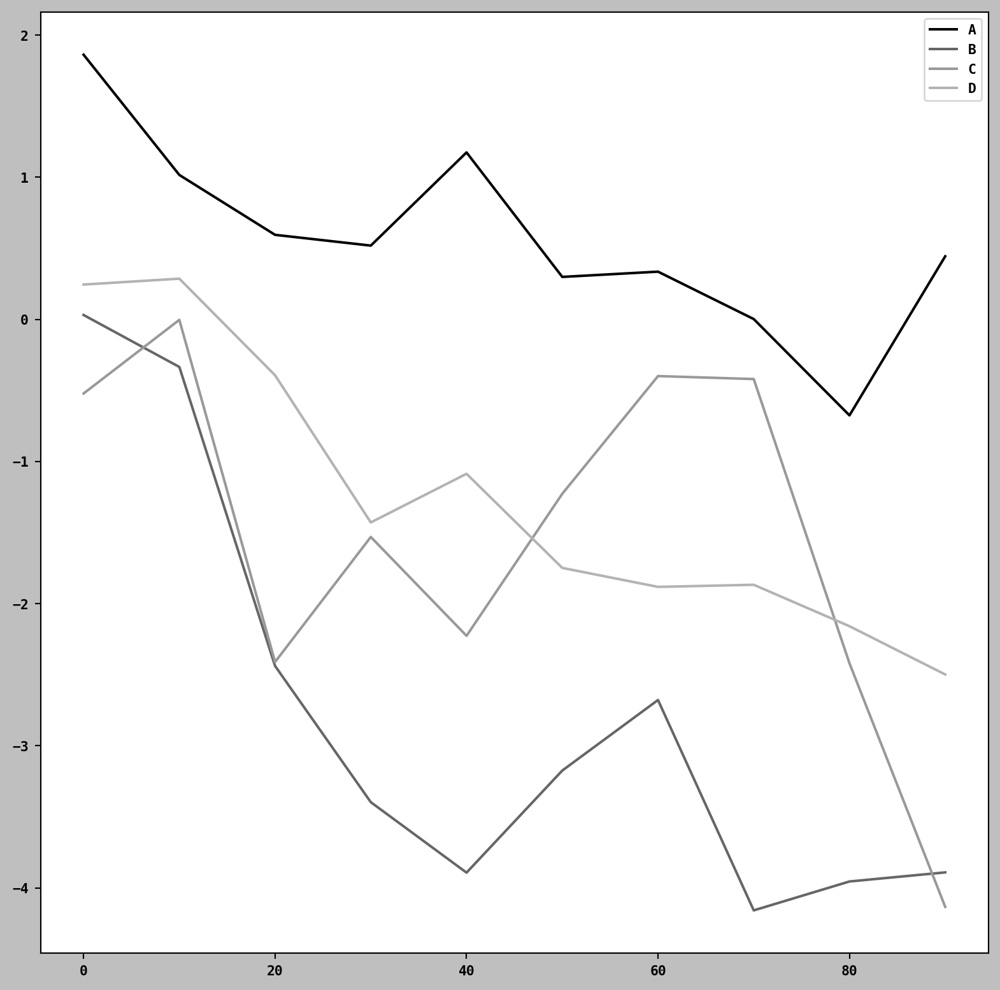
简单 DataFrame 图表

- 将每列绘制为同一子图上的单独线条。
- 自动创建图例。
df.plot()等同于df.plot.line().
DataFrame.plot 选项 ⚙️
| 参数 | 描述 |
|---|---|
subplots |
在单独的子图中绘制每个 DataFrame 列 |
layout |
2 元组（行、列），用于子图布局 |
sharex |
如果 subplots=True，共享 x 轴刻度和限制 |
sharey |
如果 subplots=True，共享 y 轴 |
legend |
添加子图图例（默认为 True） |
sort_columns |
按字母顺序绘制列（默认值：使用现有顺序） |
表 9-4. DataFrame 特定的图表参数
- 其他关键字参数将传递给 matplotlib 绘图函数。
条形图 📊
plot.bar(): 垂直条形图。plot.barh(): 水平条形图。- Series/DataFrame 索引：用于 x (bar) 或 y (barh) 刻度。
fig, axes = plt.subplots(2, 1) # 创建一个包含2行1列子图的图形
data = pd.Series(np.random.uniform(size=16), index=list("abcdefghijklmnop"))
# 创建一个Series对象。
# np.random.uniform(size=16): 生成16个均匀分布的随机数。
# index=list("abcdefghijklmnop"): 设置索引为字母a到p。
data.plot.bar(ax=axes[0], color="black", alpha=0.7)
# 在第一个子图(axes[0])上绘制垂直条形图。
# color="black": 设置条形颜色为黑色。
# alpha=0.7: 设置透明度为0.7。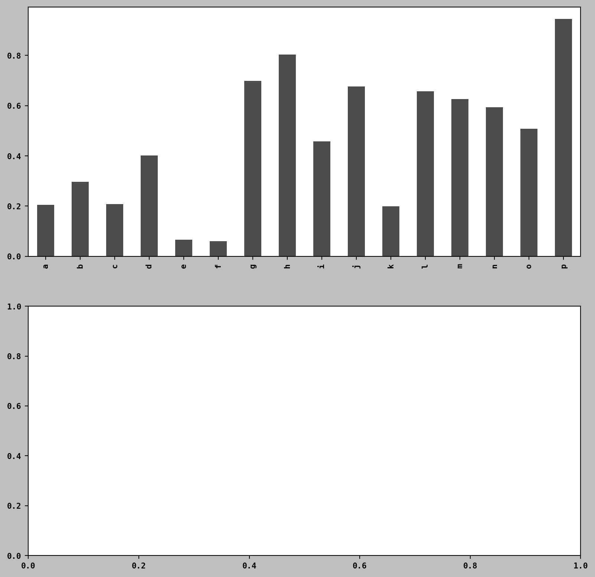
条形图（续）
data.plot.barh(ax=axes[1], color="black", alpha=0.7)
# 在第二个子图(axes[1])上绘制水平条形图。
# color="black": 设置条形颜色为黑色。
# alpha=0.7: 设置透明度为0.7。<Axes: >水平和垂直条形图

DataFrame 条形图 📊
df = pd.DataFrame(np.random.uniform(size=(6, 4)),
index=["one", "two", "three", "four", "five", "six"],
columns=pd.Index(["A", "B", "C", "D"], name="Genus"))
# 创建一个DataFrame对象。
# np.random.uniform(size=(6, 4)): 生成6x4的均匀分布随机数。
# index=["one", "two", "three", "four", "five", "six"]: 设置行索引。
# columns=pd.Index(["A", "B", "C", "D"], name="Genus"): 设置列索引，并命名为"Genus"。
df.plot.bar() # 绘制DataFrame的条形图，每行的数据并排显示DataFrame 条形图

- 将每行中的值分组在条形中，并排显示。
- DataFrame 列名：用作图例标题。
堆叠条形图 📚
stacked=True: 创建堆叠条形图。- 每行中的值堆叠在一起。
df.plot.barh(stacked=True, alpha=0.5)
# 绘制水平堆叠条形图。
# stacked=True: 设置为堆叠条形图。
# alpha=0.5: 设置透明度为0.5。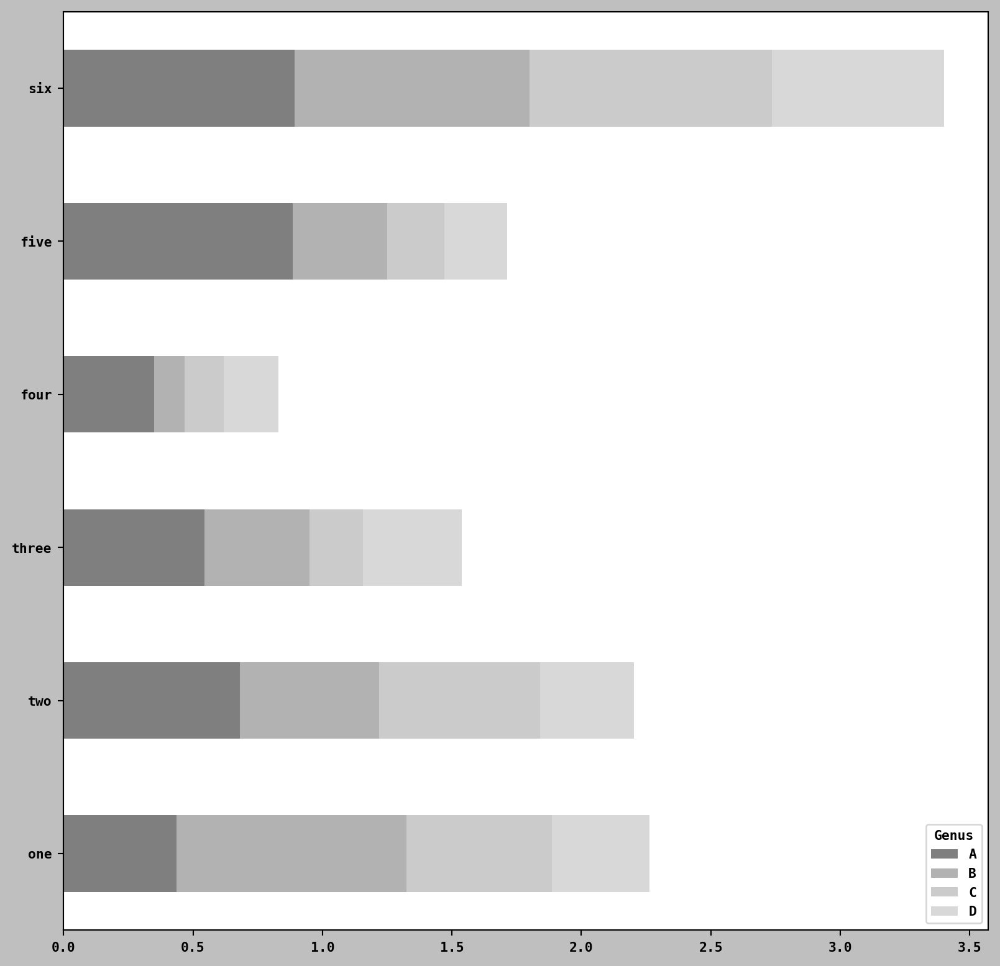
DataFrame 堆叠条形图

示例：餐厅小费数据 🍽️
- 可视化小费数据：每个聚会规模、每天的数据点百分比。
read_csv: 加载数据。crosstab: 按天和聚会规模进行交叉表计算。
tips = pd.read_csv("examples/tips.csv") # 从CSV文件读取小费数据
party_counts = pd.crosstab(tips["day"], tips["size"])
# 使用crosstab计算每天(day)和聚会规模(size)的交叉表。
# 交叉表用于统计每个组合的频数。
party_counts = party_counts.reindex(index=["Thur", "Fri", "Sat", "Sun"])
# 重新索引行，确保顺序为"Thur", "Fri", "Sat", "Sun"。餐厅小费数据（续）
- 计算数据框中两列数据的频数。
# 删除1人和6人的聚会
party_counts = party_counts.loc[:, 2:5]
# 通过标签进行选择，此处选择列标签从2到5（包括）的列，即聚会规模为2、3、4和5的数据。
# 归一化，使每行的和为1
party_pcts = party_counts.div(party_counts.sum(axis="columns"), axis="index")
# 计算每个聚会规模占当天总聚会数的百分比。
# party_counts.sum(axis="columns"): 计算每行的总和。
# .div(): 执行除法，将每行的每个元素除以该行的总和。
# axis="index": 指定除法运算按行进行。
party_pcts.plot.bar(stacked=True) # 绘制堆叠条形图，展示每个聚会规模占当天总聚会数的百分比每天各聚会规模的占比

seaborn 用于更简单的聚合和汇总 📊
- seaborn 简化了使用聚合/汇总数据的绘图。
- 示例：每天的小费百分比。
import seaborn as sns # 导入seaborn库
tips["tip_pct"] = tips["tip"] / (tips["total_bill"] - tips["tip"])
# 添加一列"tip_pct"，计算小费百分比。
sns.barplot(x="tip_pct", y="day", data=tips, orient="h")
# 使用seaborn的barplot绘制条形图。
# x="tip_pct": x轴使用"tip_pct"列的数据。
# y="day": y轴使用"day"列的数据。
# data=tips: 数据来源为tips DataFrame。
# orient="h": 水平显示条形图。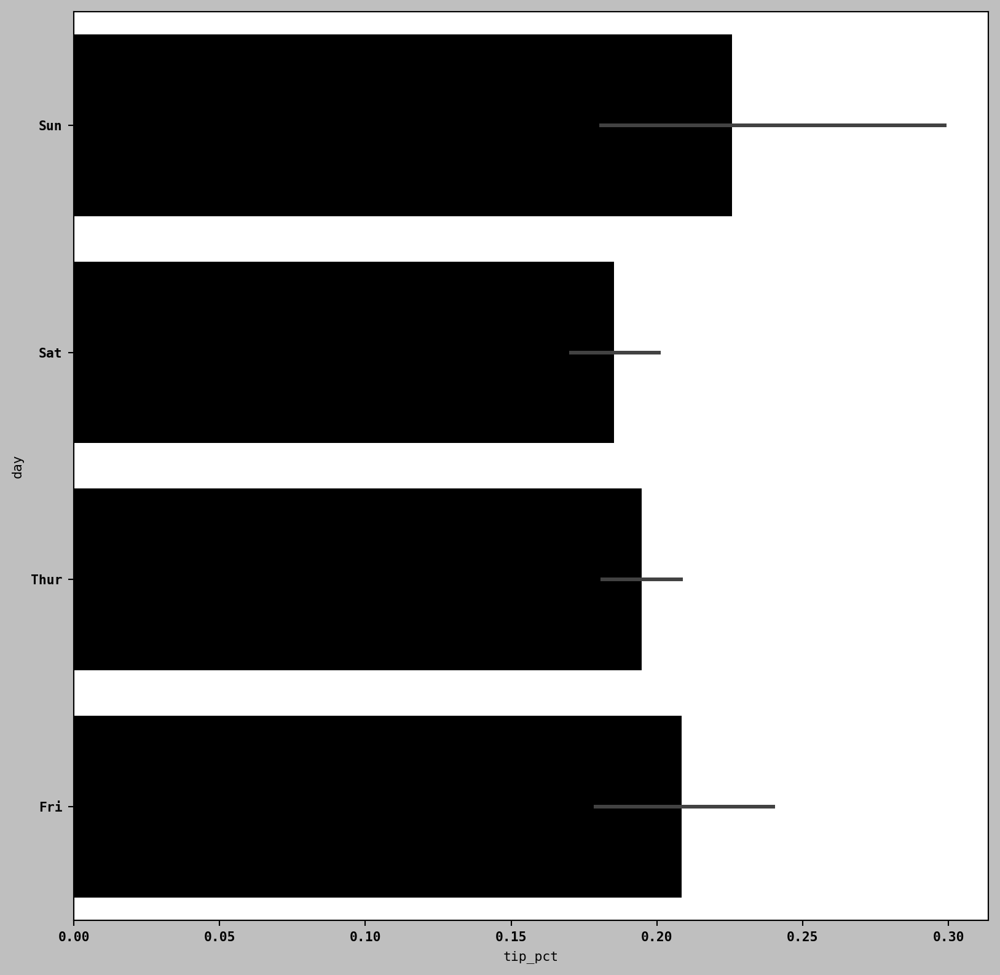
每天的小费百分比（带误差条）

data: pandas DataFrame。- 其他参数：列名。
- 条形：
tip_pct的平均值。 - 黑线：95% 置信区间。
按其他分类值拆分 🌈
seaborn.barplot中的hue选项：按另一个分类值拆分。
sns.barplot(x="tip_pct", y="day", hue="time", data=tips, orient="h")
# 使用seaborn的barplot绘制条形图，并按"time"列进行分组。
# hue="time": 根据"time"列的值对条形图进行着色区分。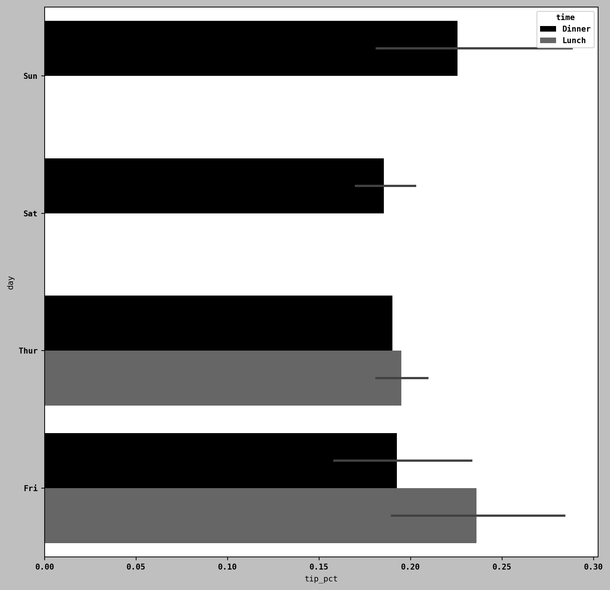
每天和每时段的小费百分比

seaborn 图表美学 🎨
- seaborn 自动调整图表美学：
- 调色板。
- 图表背景。
- 网格线颜色。
seaborn.set_style：在图表外观之间切换。
sns.set_style("whitegrid") # 设置图表样式为白色网格背景- 对于灰度，设置灰度调色板：
sns.set_palette("Greys_r") # 设置调色板为灰度直方图和密度图 📊
- 直方图：值频率的离散化显示。
- 数据点被分箱，并绘制每个箱中的计数。
plot.hist：创建直方图。
tips["tip_pct"].plot.hist(bins=50)
# 绘制"tip_pct"列的直方图。
# bins=50: 将数据分成50个柱子。小费百分比的直方图

密度图 📈
- 密度图：连续概率分布的估计。
- 近似为核（例如，正态分布）的混合。
- 也称为核密度估计 (KDE) 图。
plot.density：创建密度图。
tips["tip_pct"].plot.density() # 绘制"tip_pct"列的密度图
小费百分比的密度图

Note
密度图需要 SciPy： conda install scipy
seaborn 的 histplot 📊
- seaborn 简化了直方图和密度图。
histplot：同时绘制直方图和连续密度估计。- 示例：双峰分布。
comp1 = np.random.standard_normal(200) # 生成200个标准正态分布的随机数
comp2 = 10 + 2 * np.random.standard_normal(200) # 生成200个均值为10、标准差为2的正态分布随机数
values = pd.Series(np.concatenate([comp1, comp2])) # 将两个数组连接起来，并转换为Series对象
sns.histplot(values, bins=100, color="black")
# 使用seaborn的histplot绘制直方图和密度估计。
# bins=100: 将数据分成100个柱子。
# color="black": 设置颜色为黑色。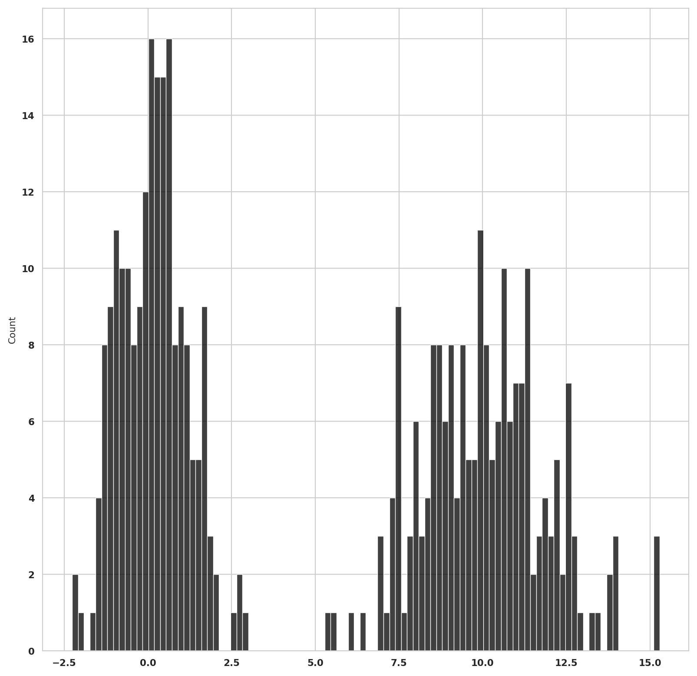
正态混合的归一化直方图

散点图或点图 🔍
- 检查两个一维数据序列之间的关系。
- 示例：加载宏观经济数据，计算对数差。
macro = pd.read_csv("examples/macrodata.csv") # 从CSV文件读取宏观经济数据
data = macro[["cpi", "m1", "tbilrate", "unemp"]] # 选择"cpi", "m1", "tbilrate", "unemp"四列数据
trans_data = np.log(data).diff().dropna()
# 计算数据的对数差。
# np.log(data): 对数据取对数。
# .diff(): 计算差分。
# .dropna(): 删除包含缺失值的行。seaborn 的 regplot 📈
regplot：绘制散点图并拟合线性回归线。
ax = sns.regplot(x="m1", y="unemp", data=trans_data)
# 使用seaborn的regplot绘制散点图，并拟合线性回归线。
# x="m1": x轴使用"m1"列的数据。
# y="unemp": y轴使用"unemp"列的数据。
# data=trans_data: 数据来源为trans_data。
ax.set_title("Changes in log(m1) versus log(unemp)") # 添加图表标题Text(0.5, 1.0, 'Changes in log(m1) versus log(unemp)')seaborn 回归/散点图

配对图或散点图矩阵 🔍
- 探索一组变量之间的散点图。
seaborn.pairplot：创建配对图。- 支持对角线上的直方图/密度估计。
sns.pairplot(trans_data, diag_kind="kde", plot_kws={"alpha": 0.2})
# 使用seaborn的pairplot创建配对图。
# diag_kind="kde": 对角线上的图表类型为核密度估计。
# plot_kws={"alpha": 0.2}: 设置散点图的透明度为0.2。Statsmodels 宏观数据的配对图矩阵

plot_kws 参数 ⚙️
- 将配置选项传递给单独的绘图调用。
- 查看
seaborn.pairplot文档字符串了解详细信息。
分面网格和分类数据 📊
- 可视化具有许多分类变量的数据。
- 分面网格：二维布局，数据根据变量值在图表之间拆分。
seaborn.catplot：简化分面图。
sns.catplot(x="day", y="tip_pct", hue="time", col="smoker",
kind="bar", data=tips[tips.tip_pct < 1])
# 使用seaborn的catplot创建分面条形图。
# x="day": x轴使用"day"列的数据。
# y="tip_pct": y轴使用"tip_pct"列的数据。
# hue="time": 根据"time"列的值对条形图进行着色区分。
# col="smoker": 根据"smoker"列的值将图表分成不同的列。
# kind="bar": 图表类型为条形图。
# data=tips[tips.tip_pct < 1]: 数据来源为tips DataFrame中"tip_pct"小于1的行。按天/时间/吸烟者划分的小费百分比

扩展分面网格 ➕
- 每个时间值添加一行：
sns.catplot(x="day", y="tip_pct", row="time",
col="smoker", kind="bar", data=tips[tips.tip_pct < 1])
# 使用seaborn的catplot创建分面条形图。
# row="time": 根据"time"列的值将图表分成不同的行。按时间/吸烟者拆分的每天小费百分比

catplot 的其他图表类型 📊
catplot支持其他图表类型（例如，箱线图）。- 箱线图显示中位数、四分位数和异常值。
sns.catplot(x="tip_pct", y="day", kind="box",
data=tips[tips.tip_pct < 0.5])
# 使用seaborn的catplot创建箱线图。
# kind="box": 图表类型为箱线图。每天小费百分比的箱线图

seaborn.FacetGrid 🧩
- 创建自定义分面网格图。
- 有关详细信息，请参阅 seaborn 文档。
其他 Python 可视化工具 🛠️
- 在 Python 中创建图形的许多选项。
```markdown - 专注于 Web 交互式图形：Altair、Bokeh、Plotly。 - 对于静态图形：使用 matplotlib 和基于它构建的库（pandas、seaborn）。
推荐阅读 📚
- Fundamentals of Data Visualization by Claus O. Wilke.
- 可在线阅读或购买：https://clauswilke.com/dataviz
结论
- 本章介绍了使用 pandas、matplotlib 和 seaborn 进行基本数据可视化的方法。
- 有效的数据可视化是一个活跃的研究领域。
- 探索更多资源以了解更多信息。
总结
- matplotlib 是一个强大而灵活的库，用于在 Python 中创建静态图表。
- pandas 提供了方便的方法来绘制
Series和DataFrame对象。 - seaborn 简化了创建许多常见统计可视化的过程，并与 pandas 良好集成。
- 有效的数据可视化对于数据分析和沟通至关重要。
思考与讨论 🤔
- 您如何将本章学到的可视化技术应用到您自己的数据分析项目中？
- 对于不同的可视化任务，使用 matplotlib、pandas 和 seaborn 的优缺点是什么？
- 您如何通过可视化有效地传达您的发现？
思考与讨论（续）🤔
- 您还探索过哪些其他 Python 可视化工具，它们与 matplotlib、pandas 和 seaborn 相比如何？
- 创建清晰、信息丰富且具有视觉吸引力的图表有哪些最佳实践？
思考与讨论（续）🤔
- 您能想到在哪些情况下，特定类型的图表（例如，直方图、散点图、箱线图）最适合传达数据中的特定见解吗？
- 您如何自定义 matplotlib 图表以增强其清晰度和视觉效果（例如，调整颜色、标签、图例）？